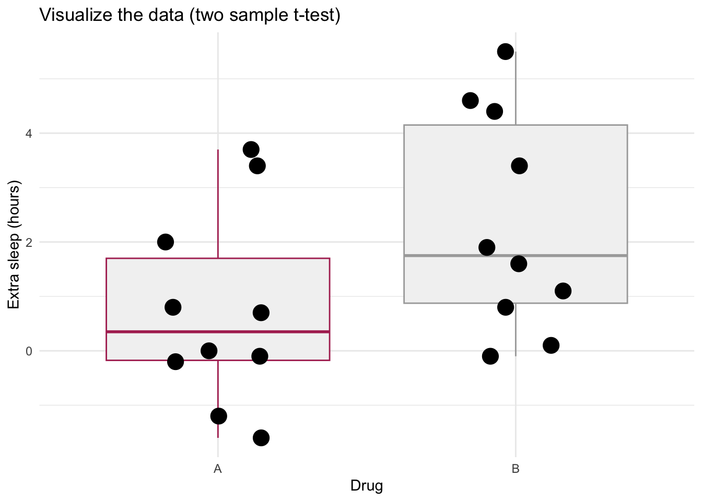
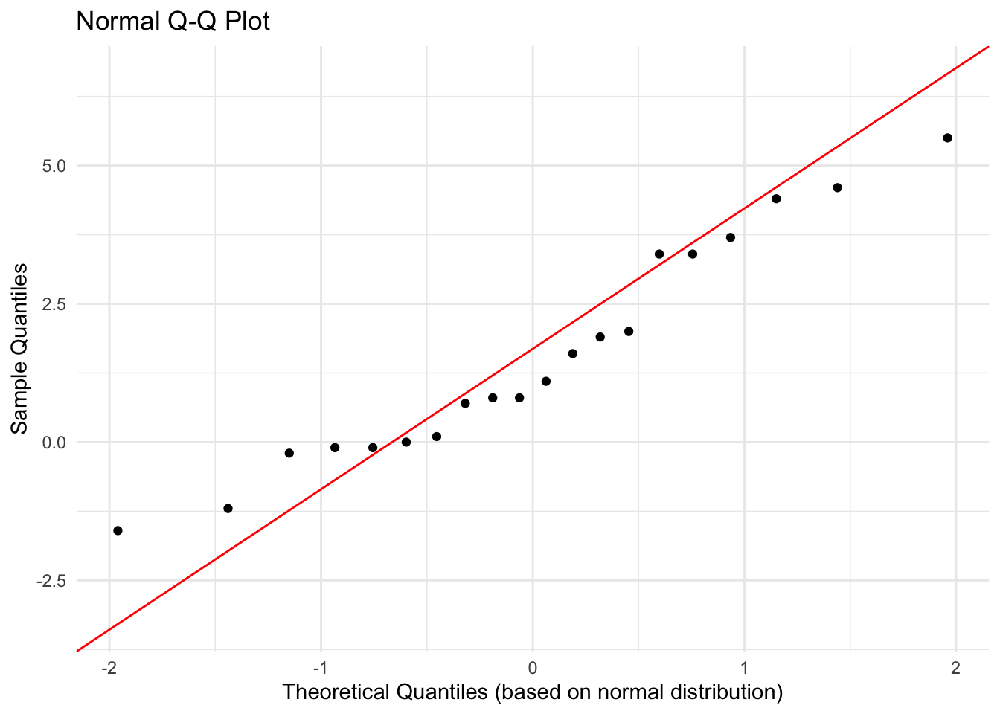
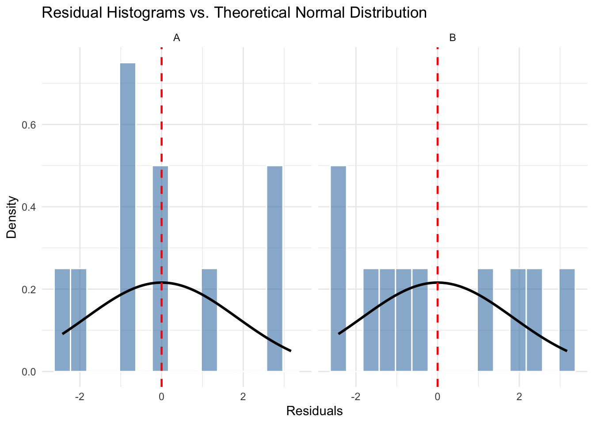

17 Mon Oct 19 - Two sample t-test and 1 way ANOVA
This lecture is based on Chapter 10.2 from Dr. Schneider’s notes.
In the past lecture, we considered a one-sample t-test. We had one categorical predictor variable (drug) and one level: drug A. In today’s lecture, we will have two levels of the one categorical preditor variable: drug A and drug B.
For the one sample t-test, the question we considered was does the drug change the amount of sleep a person gets, and we tested whether we could reject the null hypothesis that the increase in sleep was 0 hours.
For the two sample t-test, we can ask that same question, and additionally ask whether drug A and drug B perform differently from each other.
Here is the description of the study:
The example will be hours of extra sleep, in two drugs, hyoscyamine (Drug A) and hyoscine-L (Drug B). Data from Cushny AR, Peebles AR (1905). The action of optical isomers. II. Hyoscines. J Physiology 32:501-510.
Let’s load the data and graph it:
sleep.data2 = read.csv("https://raw.githubusercontent.com/ahurford/biol-4605-data/refs/heads/main/data/extrasleep.csv")
sleep.data2## drug extra.sleep person
## 1 A 0.7 1
## 2 A -1.6 2
## 3 A -0.2 3
## 4 A -1.2 4
## 5 A -0.1 5
## 6 A 3.4 6
## 7 A 3.7 7
## 8 A 0.8 8
## 9 A 0.0 9
## 10 A 2.0 10
## 11 B 1.9 1
## 12 B 0.8 2
## 13 B 1.1 3
## 14 B 0.1 4
## 15 B -0.1 5
## 16 B 4.4 6
## 17 B 5.5 7
## 18 B 1.6 8
## 19 B 4.6 9
## 20 B 3.4 10This data format is called “long table”. Note that drug A and drug B could have been columns with the associated hours of extra sleep.
library(ggplot2)
ggplot(sleep.data2, aes(x = factor(drug), y = extra.sleep)) +
# 1. Add the box plot layer
geom_boxplot(
outlier.shape = NA, # CRITICAL: Prevents duplicate plotting of outliers
fill = "grey95", # Light fill to keep it as a background summary
color = c("maroon","darkgray") # Muted border color
) +
# 2. Add the strip plot (jittered points) layer
geom_jitter(
position = position_jitter(width = 0.2, height = 0), # Controls data spreading
color = "black", # Pick a distinct color for raw data points
size = 5, # Modify point size
) +
labs(
x = "Drug",
y = "Extra sleep (hours)",
title = "Visualize the data (two sample t-test)"
) +
theme_minimal()
17.1 Construct the model
Verbal model: Either drug increases sleep. Extra sleep depends on drug.
\[ S = \beta_{0} + \beta_{Drug}\mbox{Drug} + \epsilon, \]
where \(S\) is extra sleep (hours), _0 is the grand mean of extra sleep (in hours; the grand mean is the mean withough considering drug type), and \(\beta_{Drug = A}\) is the amount of extra sleep for drug A relative to the grand mean (hours), \(\beta_{Drug = B}\) is the amount of extra sleep for drug B relative to the grand mean (hours), \(\mbox{Drug}\) is an indicator variable which is equal to 1 for the particular drug we are considering and 0 otherwise (unitless) and \(\epsilon\) is the residuals.
17.2 Execute the analysis
Unlike the one sample t-test, where we has to use the function t.test(), when we have two-samples (i.e., groups or levls: the two drugs) we can use lm(), which is a function that we can use for all of our general linear models.
##
## Call:
## lm(formula = extra.sleep ~ drug, data = sleep.data2)
##
## Residuals:
## Min 1Q Median 3Q Max
## -2.430 -1.305 -0.580 1.455 3.170
##
## Coefficients:
## Estimate Std. Error t value Pr(>|t|)
## (Intercept) 0.7500 0.6004 1.249 0.2276
## drugB 1.5800 0.8491 1.861 0.0792 .
## ---
## Signif. codes: 0 '***' 0.001 '**' 0.01 '*' 0.05 '.' 0.1 ' ' 1
##
## Residual standard error: 1.899 on 18 degrees of freedom
## Multiple R-squared: 0.1613, Adjusted R-squared: 0.1147
## F-statistic: 3.463 on 1 and 18 DF, p-value: 0.07919Since the column of our data drug contains letters, rather than numbers, lm() will treat this analysis as a t-test and not a regression.
Our results have been reported a bit differently than our model. Let’s calculate the grand mean, and the group means to understand the results better:
require(dplyr)
grand.mean = mean(sleep.data2$extra.sleep)
mean.A = sleep.data2%>%filter(drug=="A")%>%pull(extra.sleep)%>%mean()
mean.B = sleep.data2%>%filter(drug=="B")%>%pull(extra.sleep)%>%mean()
grand.mean## [1] 1.54## [1] 0.75## [1] 2.33pull() is necessary in the above code so that we can take the mean of the column. Given our model our parameter estimates are \(\hat{\beta} = 1.54\) hours, \(\hat{\beta}_A = 0.75 - 1.54 = -0.79\) hours and \(\hat{\beta}_B = 2.33 - 1.54 = 0.79\) hours.
17.2.1 Checking model assumptions
Next we will evaluate the model assumptions. We can make a QQ-plot evaluate the assumption of normality. We note that the original boxplot showed some right-skewedness for both drug A and Drug B.
# Create the Q-Q plot
ggplot(sleep.data2, aes(sample = extra.sleep)) +
stat_qq() +
stat_qq_line(color = "red") +
labs(title = "Normal Q-Q Plot", x = "Theoretical Quantiles (based on normal distribution)", y = "Sample Quantiles") +
theme_minimal()
The deviation of the sample values from the theoretical values for large negative and positive values supports the right-skewedness of the distribution of the response variable. We can plot the distribution of our residuals for both of the groups:
sleep.data2$residuals <- residuals(sleepmodel2)
# 2. Plot using density instead of count
ggplot(sleep.data2, aes(x = residuals)) +
# after_stat(density) normalizes the bars so the curve fits the y-axis scale
geom_histogram(aes(y = after_stat(density)), bins = 15,
fill = "steelblue", color = "white", alpha = 0.6) +
# Layer a theoretical normal curve over each group's data
stat_function(
fun = dnorm,
args = list(mean = 0, sd = sd(sleep.data2$residuals)), # ANOVA assumes pooled residual variance
color = "black",
linewidth = 1
) +
geom_vline(xintercept = 0, linetype = "dashed", color = "red", linewidth = 0.8) +
facet_wrap(~ drug) +
labs(
title = "Residual Histograms vs. Theoretical Normal Distribution",
x = "Residuals",
y = "Density"
) +
theme_minimal()
The plot above shows the residuals versus the predicted values agains the normal distribution. There are too few observations to evaluate this assumption very well.
The assumption of linearity does not apply to categorical variables. The assumption of independence is difficult to test without additional information. Therefore, there are no large violations of the model assumptions.
17.2.2 Partitioning SS and df
The degrees of freedom for the model are the number of categories (i.e., levels or groups) - 1 = 2 - 1 = 1.
\[ \begin{array}{lllll} \mbox{GLM} & S-\beta_0 & = & \beta_{Drug}\mbox{Drug} & + \ \ \epsilon \\ \mbox{df} & 20-1 & = & 2-1 & + \ \ 18 \\ \mbox{SS} & 77.37 & = & 12.48 & + \ \ 64.89 \\ \end{array} \]
The SS values come from the anova() command and the formula: \(SS_{Total} = SS_{model}+SS_{residual}\).
## Analysis of Variance Table
##
## Response: extra.sleep
## Df Sum Sq Mean Sq F value Pr(>F)
## drug 1 12.482 12.4820 3.4626 0.07919 .
## Residuals 18 64.886 3.6048
## ---
## Signif. codes: 0 '***' 0.001 '**' 0.01 '*' 0.05 '.' 0.1 ' ' 1